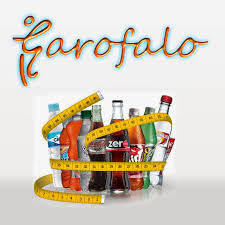
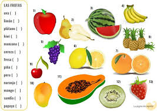

Bienvenidos a disfrutar lo mejor
Ajiaco con pollo, Caldo de Pollo, Changua o caldo con huevo, Tamales con molidos (envueltos), Bagre en salsa o bagre frito, Mondongo o Sopa de mondongo, Lomo saltado, Arroz chaufa, Tallarines saltados, Causa rellena, Arroz con mariscos, Arroz con pato, Cuy asado, Pollo a la brasa, Anticuchos, Pescado a lo macho, Aeropuerto, Salchipapas, Leche de tigre, Ceviche de pescado, Papas a la huancaína, Tiraditos, Carapulcra, Filete de Alpaca, Papa rellena, Ají de gallina, Arroz con pollo, Seco de pollo, Seco de cordero, Parihuela, Jalea de mariscos, Choros a la Chalaca, Chicharrón de pescado, Cau cau de pollo, Rocoto relleno, Aguadito de pollo, Adobo de cerdo, Lechón al horno.
leer másAgua fresca con sabor a fresa. Ingredientes, Agua fresca con sabor a mandarina, Agua fresca con sabor a sandía, Agua con sabor a cítricos varios, Agua fresca de fresa, limón, pepino y menta, Agua de cítricos y cilantro, Agua de romero y pomelo, Agua de frambuesa y pétalos de rosa, Inca Kola, Canada Dry, Big Cola, Royal Crown Cola, Sprite, 7Up, Fanta, Dr Pepper, Pepsi, Coca Cola, KOLA REAL.
 leer másHacemos todo tipo de jugos como sos: Fresa, Naranja, Sandia, Mandarina, Piña, Platano Tabasco, Uva Blanca, Cereza, Mango Paraiso, Manzana Red Delicious, Uva Roja, Frambuesa, Limon, Durazno, Manzana Gray Smith, Coco, Uva Negra, Kiwi Verde, Platano Dominico, Manzana Royal Gala, Aguacate, Granada, Ciruela roja, Caña de Azucar, Pera Anjou.
 Leer másPolleria "R & N" les da la cordial bienvenida ofreciéndoles los mas exquisitos pollos a la brasa que podrá degustarlo con toda su familia. Nuestros horarios de atención son: Lunes a Domingo de 6 pm a 11 pm. Donde nos podrán encontrar en la Av. sucre en el distrito de pomahuaca provincia jaen departamento cajamarca. o tanbien nos puede ubicar en facebook. en whastapp 985625854.